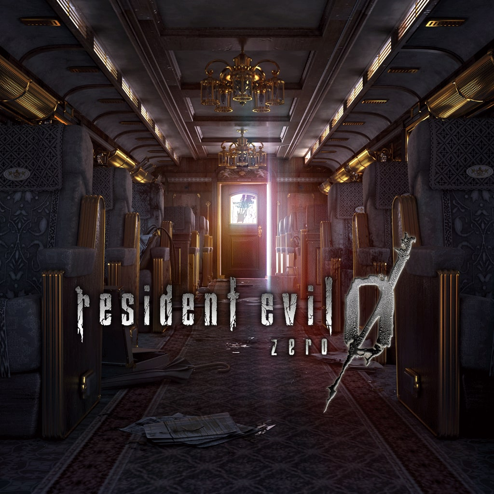
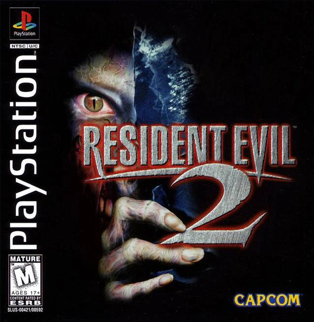
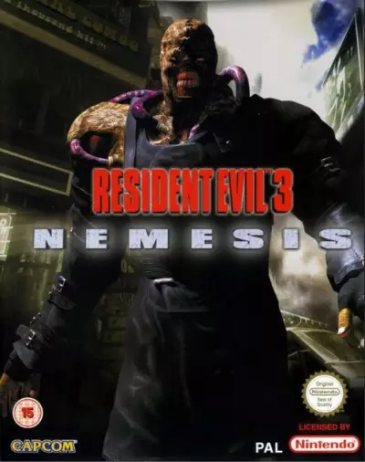

Resident Evil —cuyo título original en Japón es Biohazard (バイオハザード Baiohazādo?, «Peligro biológico»)— es un videojuego de terror del subgénero horror de supervivencia desarrollado y publicado por Capcom, originalmente para PlayStation en 1996, y es el primer juego de la serie Resident Evil. La trama del juego sigue a Chris Redfield y Jill Valentine, miembros de una fuerza de élite conocida como S.T.A.R.S., mientras investigan las afueras de Raccoon City tras la desaparición de los miembros de su equipo. Pronto quedan atrapados en una mansión infestada de zombis y diferentes tipos de monstruos. Dentro del juego, "El jugador", después de haber elegido jugar como Chris o Jill, debe explorar la mansión para descubrir sus secretos.

La historia nos sitúa en un momento distinto al que todos conocemos de la mansión Spencer. El equipo BRAVO de los STARS se dirige a Raccon City para investigar el descarrilamiento de uno de los trenes. Una vez allí se dan cuenta que ha sucedido una desgracia y que uno de los presos más peligrosos que iba a bordo del tren, Billy Coen, está desaparecido. Aquí es donde tomamos el control de Rebecca, una rookie del equipo que se encuentra con los primeros zombis. Compañeros de equipo muertos y masacrados, un extraño ente mutante a punto de acabar con nosotros y el desaparecido Billy convirtiéndose en nuestro salvador. Tocará cooperar en medio del inhóspito tren con alguien que parece más amigable que los zombis. El tren es solo el inicio a los orígenes de Umbrella.

Resident Evil 2, es el segundo título de la saga de videojuegos Resident Evil, es un videojuego del género survival horror desarrollado por Capcom, originalmente lanzado para la PlayStation en 1998 y el segundo en orden de lanzamiento de la saga. Posteriormente el juego fue portado a PC, Nintendo 64, Game.com, Sega Dreamcast y Nintendo GameCube. Resident Evil 2 estuvo planeado para la Sega Saturn y la Game Boy Advance, pero fueron cancelados por Capcom. Resident Evil 2 actúa como secuela directa, toma lugar dos meses después de los acontecimientos del primer juego donde finalmente, Raccoon City sucumbe ante el peligroso virus-T y dos personas con motivos muy diferentes, se ven obligados a colaborar entre sí para escapar con vida de la horrible pesadilla a la que han entrado.

Resident Evil 3 es un videojuego de terror de acción y aventura de disparos en tercera persona desarrollado y publicado por Capcom, se trata de una nueva versión del videojuego homónimo de 1999 y sigue a los personajes de Jill Valentine y Carlos Oliveira intentando sobrevivir a un apocalipsis zombi en Raccoon City mientras son perseguidos por Nemesis, la nueva e inteligente arma biológica de Umbrella.